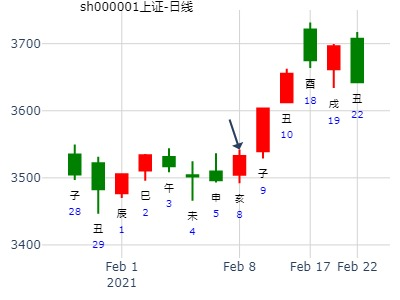
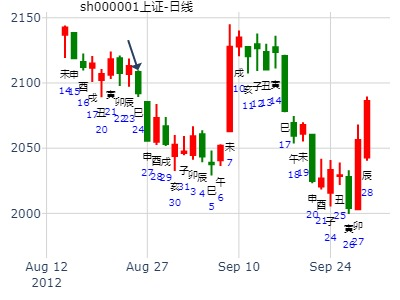

有研新材丑月走势——乾隆币卦 红牛
有研新材丑月走势
公历时间：2016年1月18日14时21分
干 支：乙未年 己丑月 己亥日 辛未时
旬 空：辰巳 午未 (辰巳) 戌亥
坎宫：雷火丰
六神 【本 卦】
勾陈 ▄▄ ▄▄ 官鬼庚戌土
朱雀 ▄▄ ▄▄ 父母庚申金 世
青龙 ▄▄▄▄▄ 妻财庚午火
玄武 ▄▄▄▄▄ 兄弟己亥水
白虎 ▄▄ ▄▄ 官鬼己丑土 应
螣蛇 ▄▄▄▄▄ 子孙己卯木
婚否： 女 占事：601689后期趋势
起卦方式：手动摇卦 六爻排盘http://paipan.9d19.com/6y.asp
公历时间：2016年1月21日11时19分
干支：乙未年 己丑月 壬寅日 丙午时
旬空：辰巳 午未 辰巳 寅卯
坎宫：雷火丰
白虎 ▄▄ ▄▄ 官鬼庚戌土
螣蛇 ▄▄ ▄▄ 父母庚申金 世
勾陈 ▄▄▄▄▄ 妻财庚午火
朱雀 ▄▄▄▄▄ 兄弟己亥水
青龙 ▄▄ ▄▄ 官鬼己丑土 应
玄武 ▄▄▄▄▄ 子孙己卯木
券商证券己亥年卦,雷火丰静卦
时间: 2019-02-20
干支: 己亥年丙寅月戊子日 (旬空: 午未 )
丰静卦
朱雀 ▅▅ ▅▅ 官鬼戌土
青龙 ▅▅ ▅▅ 父母申金 世
玄武 ▅▅▅▅▅ 妻财午火
白虎 ▅▅▅▅▅ 兄弟亥水
腾蛇 ▅▅ ▅▅ 官鬼丑土 应
勾陈 ▅▅▅▅▅ 子孙卯木
主帖标题: 大家一起来，九缠烂打：上证2021.2.8收盘个位数是几？
5+x shhejie?
出生：2021 年 性别：男 占事：没填
排卦：元亨利贞网六爻在线排盘系统 https://www.china95.net
公历起卦时间：2021年2月7日19时27分 (电脑自动)
干支：辛丑年 庚寅月 丙戌日 戊戌时 （日空：午未）
坎宫：雷火丰 坎宫：雷火丰
青龙 官鬼庚戌土 ▅▅ ▅▅ 官鬼庚戌土 ▅▅ ▅▅
玄武 父母庚申金 ▅▅ ▅▅ 世 父母庚申金 ▅▅ ▅▅ 世
白虎 妻财庚午火 ▅▅▅▅▅ 妻财庚午火 ▅▅▅▅▅
螣蛇 兄弟己亥水 ▅▅▅▅▅ 兄弟己亥水 ▅▅▅▅▅
勾陈 官鬼己丑土 ▅▅ ▅▅ 应 官鬼己丑土 ▅▅ ▅▅ 应
朱雀 子孙己卯木 ▅▅▅▅▅ 子孙己卯木 ▅▅▅▅▅

测上证2023.2.8丁酉三-2.10己亥五哪日顶？
起卦方式：手动摇卦
公历：2023年02月09日09时14分
四柱：癸卯年 甲寅月 戊戌日 丁巳时 (日空：辰巳)
卦名：坎宫5世卦：雷火丰
朱雀 ▅ ▅ 官鬼庚戌土
青龙 ▅ ▅ 父母庚申金 世
玄武 ▅▅▅ 妻财庚午火
白虎 ▅▅▅ 兄弟己亥水
螣蛇 ▅ ▅ 官鬼己丑土 应
勾陈 ▅▅▅ 子孙己卯木

600117西宁特钢. 现价介入,最低目标价位9.15元.
占事：600117西宁特钢财？
起卦方式：手动摇卦w.iqing.net
公历时间：2007年3月10日22时21分 星期六
干支：丁亥年 癸卯月 癸卯日 癸亥时 (旬空：辰巳)
丰静卦
白虎 ▅▅ ▅▅ 官鬼戌土
腾蛇 ▅▅ ▅▅ 父母申金 世
勾陈 ▅▅▅▅▅ 妻财午火
朱雀 ▅▅▅▅▅ 兄弟亥水
青龙 ▅▅ ▅▅ 官鬼丑土 应
玄武 ▅▅▅▅▅ 子孙卯木
600362未来二周走势如何？ 阿晖在线
公历起卦时间：2015年3月11日12时56分 (在线摇卦)
干支：乙未年 己卯月 丙戌日 甲午时 （日空：午未）
坎宫：雷火丰 坎宫：雷火丰
六神 伏神 本 卦 变 卦
青龙 官鬼庚戌土 ▅▅ ▅▅ 官鬼庚戌土 ▅▅ ▅▅
玄武 父母庚申金 ▅▅ ▅▅ 世 父母庚申金 ▅▅ ▅▅ 世
白虎 妻财庚午火 ▅▅▅▅▅ 妻财庚午火 ▅▅▅▅▅
腾蛇 兄弟己亥水 ▅▅▅▅▅ 兄弟己亥水 ▅▅▅▅▅
勾陈 官鬼己丑土 ▅▅ ▅▅ 应 官鬼己丑土 ▅▅ ▅▅ 应
朱雀 子孙己卯木 ▅▅▅▅▅ 子孙己卯木 ▅▅▅▅▅
中国石油456月走势-天机六爻排盘
2024年3月29日 21:17
丰静卦，600028最近456月走势，by金玉堂，
甲辰年 丁卯月 壬辰日 辛亥时 (旬空：午未)
丰静卦
白虎 ▅▅ ▅▅ 官鬼戌土
腾蛇 ▅▅ ▅▅ 父母申金 世
勾陈 ▅▅▅▅▅ 妻财午火
朱雀 ▅▅▅▅▅ 兄弟亥水
青龙 ▅▅ ▅▅ 官鬼丑土 应
玄武 ▅▅▅▅▅ 子孙卯木
女 占事：招财公主测002197未来二周走势
公历起卦时间：2015年4月11日21时36分 (在线摇卦)
干支：乙未年庚辰月丁巳日辛亥时 （日空：子丑）
坎宫：雷火丰 坎宫：雷火丰
六神 伏神 本 卦 变 卦
青龙 官鬼庚戌土 ▅▅ ▅▅ 官鬼庚戌土 ▅▅ ▅▅
玄武 父母庚申金 ▅▅ ▅▅ 世 父母庚申金 ▅▅ ▅▅ 世
白虎 妻财庚午火 ▅▅▅▅▅ 妻财庚午火 ▅▅▅▅▅
腾蛇 兄弟己亥水 ▅▅▅▅▅ 兄弟己亥水 ▅▅▅▅▅
勾陈 官鬼己丑土 ▅▅ ▅▅ 应 官鬼己丑土 ▅▅ ▅▅ 应
朱雀 子孙己卯木 ▅▅▅▅▅ 子孙己卯木 ▅▅▅▅▅
雷火丰，吉卦。辰月看涨。 中再资环三个月趋势。.md
时间: 2017-04-01 15时14分
干支: 丁酉年癸卯月戊午日 (旬空: 子丑 )
丰静卦
朱雀 ▅▅ ▅▅ 官鬼戌土
青龙 ▅▅ ▅▅ 父母申金 世
玄武 ▅▅▅▅▅ 妻财午火
白虎 ▅▅▅▅▅ 兄弟亥水
腾蛇 ▅▅ ▅▅ 官鬼丑土 应
勾陈 ▅▅▅▅▅ 子孙卯木
沧州大化600230 2周走势。丰静卦。
时间: 2022-04-10 12时19分
干支: 壬寅年甲辰月癸巳日 (旬空: 午未 )
丰 静 卦
白虎 ▅▅ ▅▅ 官鬼戌土
腾蛇 ▅▅ ▅▅ 父母申金 世
勾陈 ▅▅▅▅▅ 妻财午火
朱雀 ▅▅▅▅▅ 兄弟亥水
青龙 ▅▅ ▅▅ 官鬼丑土 应
玄武 ▅▅▅▅▅ 子孙卯木
主帖标题: 2020.06.15日-19日上证指数擂台赛第22场H方（周测)
我手摇 2020-06-14
干支：庚子年 壬午月 戊子日 癸亥时 (卦身：辰)
主变卦 雷火丰(坎宫) [空亡:午、未]
朱雀 ▅▅ ▅▅ 官鬼庚戌土
青龙 ▅▅ ▅▅ 父母庚申金 世
玄武 ▅▅▅▅▅ 妻财庚午火
白虎 ▅▅▅▅▅ 兄弟己亥水
螣蛇 ▅▅ ▅▅ 官鬼己丑土 应
勾陈 ▅▅▅▅▅ 子孙己卯木


雷火丰静卦。上海新阳629周卦，到7月9日。金玉堂。.md
时间: 2021-06-29 22时33分
干支: 辛丑年甲午月戊申日 (旬空: 寅卯 )
丰静卦
朱雀 ▅▅ ▅▅ 官鬼戌土
青龙 ▅▅ ▅▅ 父母申金 世
玄武 ▅▅▅▅▅ 妻财午火
白虎 ▅▅▅▅▅ 兄弟亥水
腾蛇 ▅▅ ▅▅ 官鬼丑土 应
勾陈 ▅▅▅▅▅ 子孙卯木
刘占军 6:24:03 雷火丰，002053云南盐化，8月-10月走势
雷火丰，2014.8～10月，002053三月内走势（ferrari铜钱）
公历起卦时间：2014年7月30日22时5分 (手工指定)
干支：甲午年 辛未月 壬寅日 辛亥时 （日空：辰巳）
丰 静 卦
白虎 ▅▅ ▅▅ 官鬼戌土
腾蛇 ▅▅ ▅▅ 父母申金 世
勾陈 ▅▅▅▅▅ 妻财午火
朱雀 ▅▅▅▅▅ 兄弟亥水
青龙 ▅▅ ▅▅ 官鬼丑土 应
玄武 ▅▅▅▅▅ 子孙卯木
主帖标题: 8月27-31日大盘涨跌卦
占事：8月27-31日大盘涨跌？
公历起卦时间：2012年8月24日16时8分 (手工指定)
干支：壬辰年 戊申月 丁巳日 戊申时 （日空：子丑）
坎宫：雷火丰
青龙 官鬼庚戌土 ▅▅ ▅▅
玄武 父母庚申金 ▅▅ ▅▅ 世
白虎 妻财庚午火 ▅▅▅▅▅
腾蛇 兄弟己亥水 ▅▅▅▅▅
勾陈 官鬼己丑土 ▅▅ ▅▅ 应
朱雀 子孙己卯木 ▅▅▅▅▅

830-903大盘预测，雷火丰静卦，张三汉
时间: 2021-08-28 21时08分
干支: 辛丑年丙申月戊申日 (旬空: 寅卯 )
丰静卦
朱雀 ▅▅ ▅▅ 官鬼戌土
青龙 ▅▅ ▅▅ 父母申金 世
玄武 ▅▅▅▅▅ 妻财午火
白虎 ▅▅▅▅▅ 兄弟亥水
腾蛇 ▅▅ ▅▅ 官鬼丑土 应
勾陈 ▅▅▅▅▅ 子孙卯木
815周大盘。雷火丰静卦。张三汉。
时间: 2022-08-12 16时58分
干支: 壬寅年戊申月丁酉日 (旬空: 辰巳 )
丰静卦
青龙 ▅▅ ▅▅ 官鬼戌土
玄武 ▅▅ ▅▅ 父母申金 世
白虎 ▅▅▅▅▅ 妻财午火
腾蛇 ▅▅▅▅▅ 兄弟亥水
勾陈 ▅▅ ▅▅ 官鬼丑土 应
朱雀 ▅▅▅▅▅ 子孙卯木
600150中国船舶3个月。雷火丰静卦。风生水起
时间: 2022-08-18
干支: 壬寅年戊申月癸卯日 (旬空: 辰巳 )
丰静卦
白虎 ▅▅ ▅▅ 官鬼戌土
腾蛇 ▅▅ ▅▅ 父母申金 世
勾陈 ▅▅▅▅▅ 妻财午火
朱雀 ▅▅▅▅▅ 兄弟亥水
青龙 ▅▅ ▅▅ 官鬼丑土 应
玄武 ▅▅▅▅▅ 子孙卯木
2014-09-19 603099 雷火丰静卦，横盘。兄弟暗动。财爻旬空
原贴占事：603099 14时2分
干支: 甲午年癸酉月癸巳日己未时 (旬空: 午未 )
丰静卦
白虎 ▅▅ ▅▅ 官鬼戌土
腾蛇 ▅▅ ▅▅ 父母申金 世
勾陈 ▅▅▅▅▅ 妻财午火
朱雀 ▅▅▅▅▅ 兄弟亥水
青龙 ▅▅ ▅▅ 官鬼丑土 应
玄武 ▅▅▅▅▅ 子孙卯木
原贴主（水易缘）点评： 受限休整，戌月涨。
王点评：如果长线卦，亥水暗动不吉。短线申日暴涨，或许与世爻得日有关。
雷火丰静卦，000833一周走势。
时间: 2015-09-11 16时27分
干支: 乙未年乙酉月庚寅日甲申时 (旬空: 午未 )
丰静卦
腾蛇 ▅▅ ▅▅ 官鬼戌土
勾陈 ▅▅ ▅▅ 父母申金 世
朱雀 ▅▅▅▅▅ 妻财午火
青龙 ▅▅▅▅▅ 兄弟亥水
玄武 ▅▅ ▅▅ 官鬼丑土 应
白虎 ▅▅▅▅▅ 子孙卯木
1024-28日上证行情周卦。--雷火丰静卦。戌日大跌
时间: 2022-10-23 16时28分
干支: 壬寅年庚戌月己酉日壬申时 (旬空: 寅卯 )
丰静卦
勾陈 ▅▅ ▅▅ 官鬼戌土
朱雀 ▅▅ ▅▅ 父母申金 世
青龙 ▅▅▅▅▅ 妻财午火
玄武 ▅▅▅▅▅ 兄弟亥水
白虎 ▅▅ ▅▅ 官鬼丑土 应
腾蛇 ▅▅▅▅▅ 子孙卯木
马后炮：寅日还大跌，应在世爻暗动。
海航科技未来一年
时间: 2024-11-09
干支: 甲辰年乙亥月丁丑日 (旬空: 申酉 )
丰 静 卦
青龙 ▅▅ ▅▅ 官鬼戌土
玄武 ▅▅ ▅▅ 父母申金 世
白虎 ▅▅▅▅▅ 妻财午火
腾蛇 ▅▅▅▅▅ 兄弟亥水
勾陈 ▅▅ ▅▅ 官鬼丑土 应
朱雀 ▅▅▅▅▅ 子孙卯木
主帖标题: 试测上证2020.日收盘个位十位？
试测上证2020.12.17收盘个位是几？22:05
排卦：中国周易研究会网六爻在线排盘系统 https://www.suan98.com
公历起卦时间：2020年12月16日22时8分 (电脑自动)
干支：庚子年 戊子月 癸巳日 癸亥时 （日空：午未）
坎宫：雷火丰
白虎 官鬼庚戌土 ▅▅ ▅▅
螣蛇 父母庚申金 ▅▅ ▅▅ 世
勾陈 妻财庚午火 ▅▅▅▅▅
朱雀 兄弟己亥水 ▅▅▅▅▅
青龙 官鬼己丑土 ▅▅ ▅▅ 应
玄武 子孙己卯木 ▅▅▅▅▅

黄金2015年走势 卦者：ght923
公历时间：2014年12月27日 10时00分 农历时间：甲午年十一月初六日巳时
甲午年丙子月壬申日乙巳时 (旬空：戌亥)
坎宫：雷火丰
六神 伏 神 【本 卦】
白虎 官鬼庚戌土━ ━
螣蛇 父母庚申金━ ━ 世
勾陈 妻财庚午火━━━
朱雀 兄弟己亥水━━━
青龙 官鬼己丑土━ ━ 应
玄武 子孙己卯木━━━
断：子孙入岁墓，还是不好； |